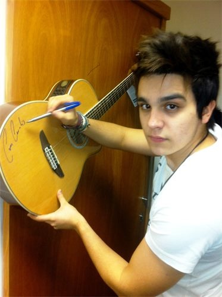
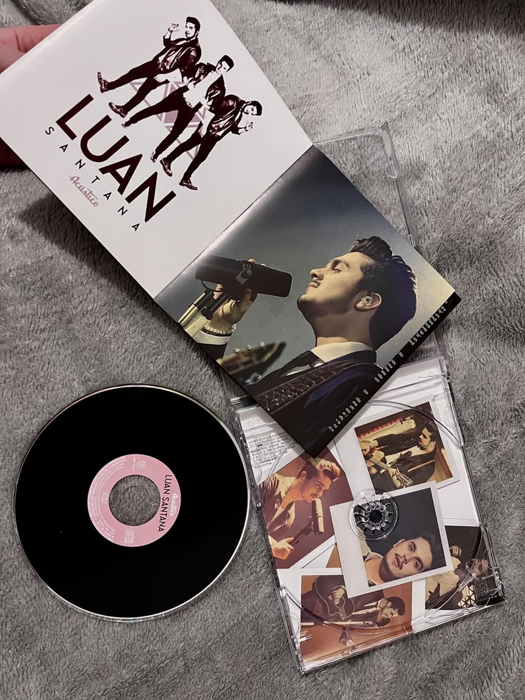

Origem
Luan Rafael Domingos Santana nasceu em Campo Grande, Mato Grosso do Sul, em 13 de março de 1991.
Origem
Luan Rafael Domingos Santana nasceu em Campo Grande, Mato Grosso do Sul, em 13 de março de 1991.
Início musical
Desde criança, Luan demonstrava interesse pela música e começou a se aproximar do sertanejo ainda cedo.
Primeiros passos
Antes do sucesso nacional, Luan começou divulgando suas músicas e apresentações, ganhando espaço aos poucos.

Meteoro
A música “Meteoro” foi um dos maiores marcos do início da carreira e ajudou Luan a ficar conhecido no Brasil.
Sertanejo universitário
Luan cresceu em uma fase forte do sertanejo universitário, estilo marcado por músicas românticas e linguagem jovem.

Projeto Acústico
O projeto “Acústico” trouxe uma fase mais intimista, com visual diferente e músicas em versões mais suaves.
Luan City
“Luan City” representa uma fase mais moderna da carreira, com identidade visual própria e grande produção.
Romantismo
As músicas românticas são uma das principais marcas de Luan, com letras sobre amor, saudade e relacionamentos.